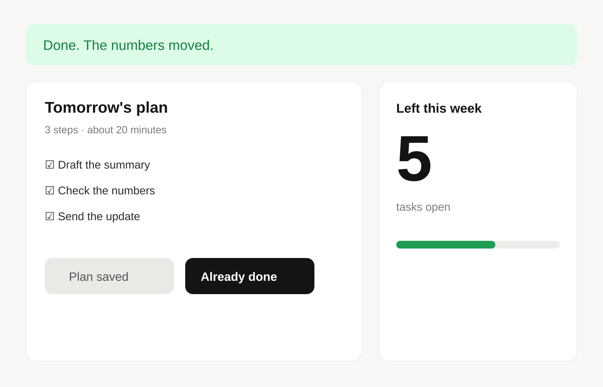

Conference talk · 25 minutes

Platform engineer · Speaker · Brisbane
Your Name (handle)
I run the coding-agent fleet for a payments team. Tonight: one incident, one rule.
What held
Four gates. No heroics.
- 01Scope the prompt to one file set
- 02Dry run in a sandbox copy
- 03A person reads the diff
- 04Deploy behind a flag



Drawnstand-ins for the review dashboard
Thank you!
Agents in production. What actually broke.
One fixture lost. Zero customer data ✓
 Grab the slides
example.com/slides
Grab the slides
example.com/slides